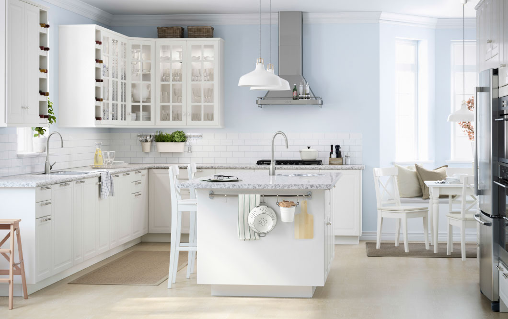
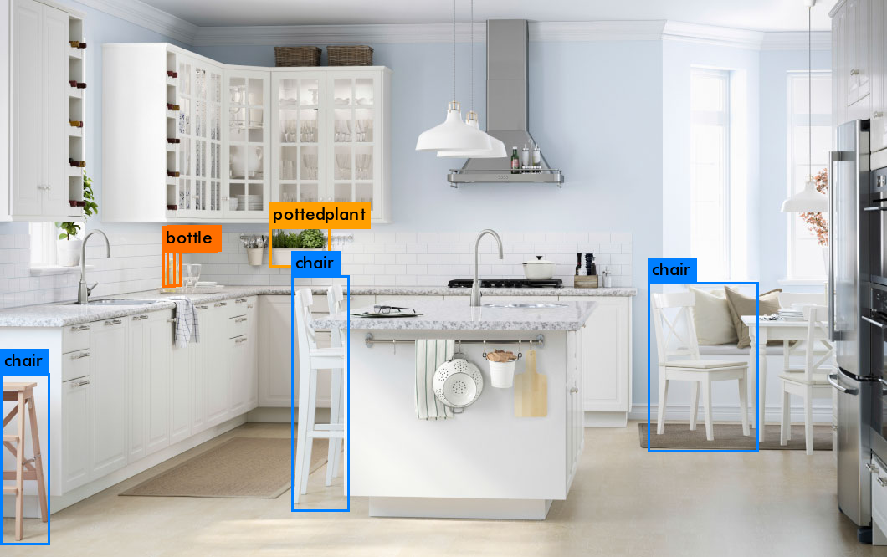
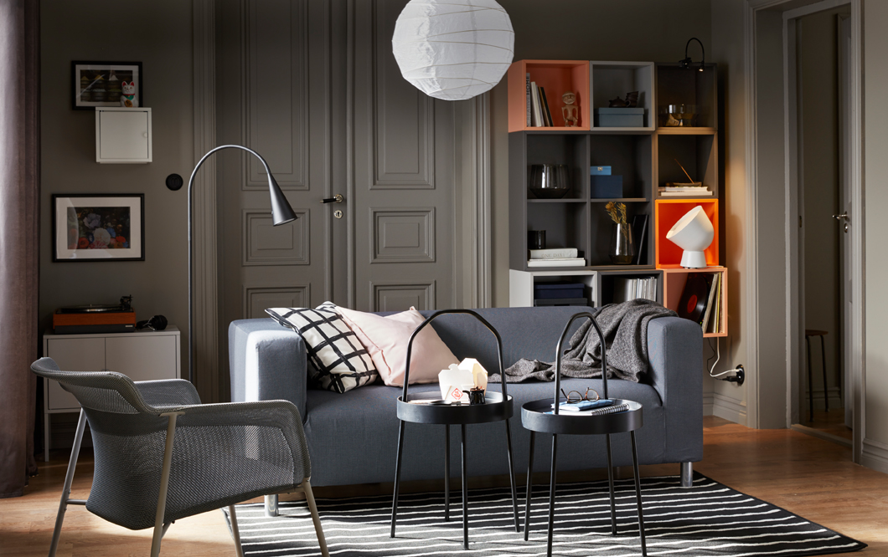
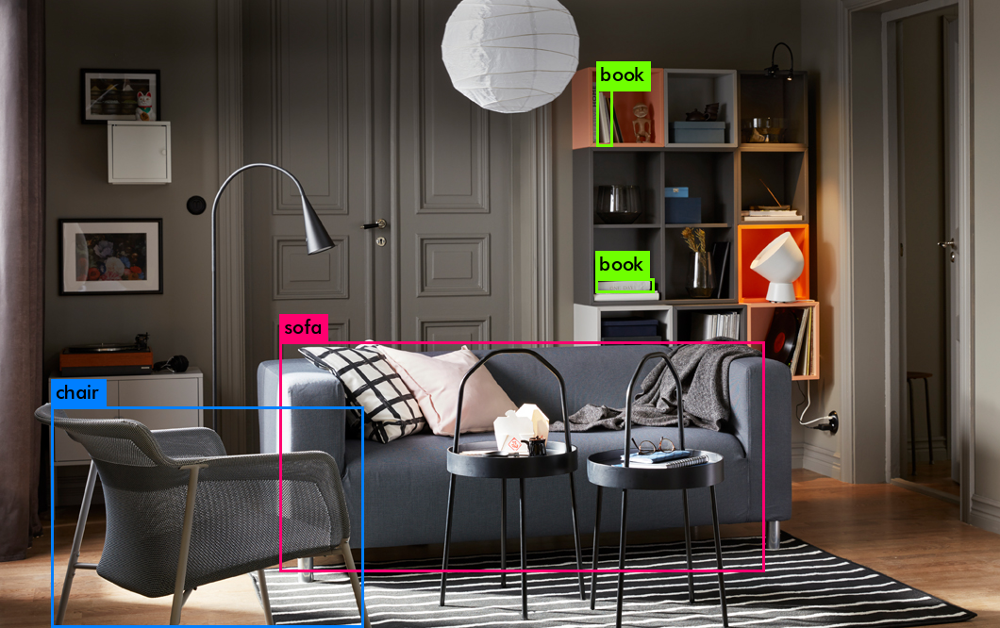

Problem Definition
The goal of this project is to use artificial intelligence algorithms/models, e.g., neural networks, to recognize and locate objects, here, IKEA products, in images of indoor scenes from "IKEA galleries." The sample photos of objects that are known to be in the scene have been provided as guidance for our recognition system. We match as many objects as possible among the provided objects with their equivalent objects in the scene.
Method and Implementation
- Neural Network architecture used: We apply a single neural network to the full image. This network divides the image into regions and predicts bounding boxes and probabilities for each region. These bounding boxes are weighted by the predicted probabilities. Our model has several advantages over classifier-based systems. It looks at the whole image at test time so its predictions are informed by global context in the image. It also makes predictions with a single network evaluation unlike systems like R-CNN which require thousands for a single image. This makes it extremely fast, more than 1000x faster than R-CNN and 100x faster than Fast R-CNN.
- Mechanism used for training: We used pre-trained YOLO weights to train the data along with the images in the IKEA dataset by breaking them into train set and validation set in the ratio 80:20. This train set is the custom training that we perform on the pre-trained model to get better accuracy with respect to images from the IKEA dataset.
Experiments
- Each box predicts the classes the bounding box may contain using multilabel classification. We do not use a softmax as we have found it is unnecessary for good performance, instead we simply use independent logistic classifiers. During training we use binary cross-entropy loss for the class predictions.
- We use multi-scale training, lots of data augmentation and batch normalization.
- Our network uses successive 3 × 3 and 1 × 1 convolutional layers. It has 53 convolutional layers
- Our system predicts bounding boxes using dimension clusters as anchor boxes. The network predicts 4 coordinates for each bounding box, tx, ty, tw, th.
- During training we use sum of squared error loss. If the ground truth for some coordinate prediction is t'* our gradient is the ground truth value (computed from the ground truth box) minus our prediction: t'* − t*.
Results
Results | ||||||
Original Image and New Image(Annotated by Model) | ||
|  |  | |
|  |  | |
Discussion
- We use anchor box instead of original grid based approach, the anchor size is chosen using k-mean clustering, instead of hand picking.
- Fusing low level feature with high level feature.
- The low level feature is reshaped to be of the same size (down sample) as high level feature.
- Multi scale training. Similar to data augmentation like random crop, make network robust against different object scales. Compared to random crop, this approach enables us to augment smaller size object more easily.
Conclusions
The IKEA dataset is not a of a significant size and hence, the training set is not that effective as it would be for a larger dataset. Also, there were a lot of discrepancies and inconsistencies in the data and annotations which resulted in a less accurate prediction. The classes that were extracted from the annotations could not be generalized as there was ambiguity with respect to the object names and attributes. Overall, if the dataset and the annotations are refactored, better predictions can be obtained. Also, the YOLO petrained model does a reasonably effective job of predicting accurate objects even without a significant amount of train data.
Credits and Bibliography
References:
- http://www.cs.bu.edu/fac/betke/cs440/restricted/project/Project-instructions-CS640.html
- http://labelme2.csail.mit.edu/Release3.0/index.php
- http://www.cs.bu.edu/fac/betke/cs440/restricted/project/LabelMe-instructions-CS640.html
- https://www.bu.edu/tech/support/research/computing-resources/scc/
- https://pjreddie.com/darknet/yolo/
- https://pjreddie.com/media/files/papers/YOLOv3.pdf
Collaboration:
- Collaborated with Gur Asees Chandok.